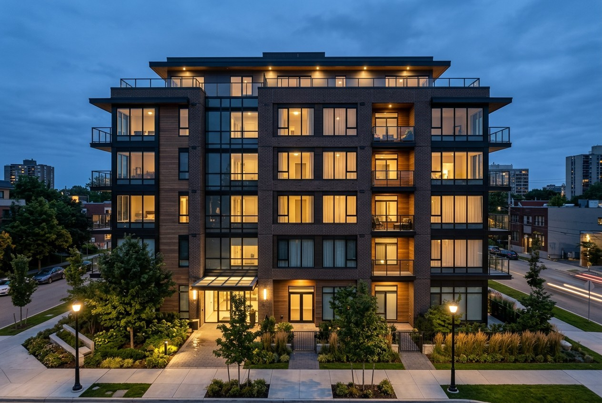

By the Editorial Team | Published: July 2026 | Last Updated: July 2026
Finishing Construction Is Not Finishing the Project
There is a moment on every multi-family project when the building looks done - the exterior is complete, the units are finished - and yet no one can legally move in. Between the last coat of paint and the first tenant lies a formal gate: the certificate of occupancy, the government's declaration that the building is safe to inhabit. And on larger projects, the path to that gate is not a single finish line but a series of them, as the building opens in phases to start earning income before the whole project completes. Understanding occupancy and phasing is understanding the endgame of delivery, where a project finally turns from a cost into an asset.
The Certificate of Occupancy
The certificate of occupancy, or CO, is the official document a municipality issues confirming that a building complies with code and is safe for its intended use. Until it is issued, occupancy is not legal - a building can be physically finished and still empty because the paperwork gate has not opened. Earning the CO requires passing the final inspections across every discipline: building, fire, electrical, plumbing, mechanical, and accessibility, each confirming its systems work and comply. The fire and life-safety inspections are especially consequential in multi-family, since the sprinklers, alarms, rated assemblies, and egress must all be verified operational before people live among them.
Temporary and Phased Occupancy
Large multi-family projects rarely finish all at once, and waiting for the entire development to complete before earning any income would be financially punishing. So the building often opens in stages, each stage cleared for occupancy as it finishes:
| Mechanism | What it allows |
|---|---|
| Temporary certificate of occupancy (TCO) | Move-in before the whole project is finished, with conditions |
| Phased occupancy by building | Completed buildings open while others are under construction |
| Phased occupancy by floor | Lower floors occupied while upper floors finish |
| Final certificate of occupancy | Full, unconditional occupancy at project completion |
A temporary certificate of occupancy permits move-in before every last item is done, provided the occupied portion is safe and specific conditions are met - the life-safety systems serving those units must be fully operational, even if landscaping or a later building is not. Phasing lets a completed building or a block of lower floors begin leasing and generating rent while construction continues elsewhere on site, which transforms the project's finances.
Why Phasing Is a Financial Strategy
Phased occupancy is not merely a convenience; it is a deliberate financial tool. Every month a finished unit sits empty waiting for the rest of the project is a month of lost rent against a loan still accruing interest. By opening in phases, a developer starts lease-up early, brings in income that offsets carrying costs, and begins the transition from a construction loan to permanent financing sooner. The sequencing has to be planned from the start - the site logistics, the utility connections, and the life-safety systems must all be arranged so that early phases can be safely occupied while later phases are active construction zones, with the two kept separated. This is delivery and finance intertwined, and getting it right materially improves a project's return.
The Endgame Belongs in the Plan From the Beginning
Because occupancy and phasing carry such financial weight, they cannot be improvised at the end. The construction sequence, the draw schedule, the inspection timeline, and the lease-up plan all have to align so that the building reaches its occupancy gates when the financing and the market need it to. A project planned backward from its occupancy strategy - knowing which phase must open when, and building toward those dates - outperforms one that treats the CO as an afterthought discovered at the finish. Sequencing that endgame alongside the construction is one of the defining skills of builder-led delivery, where the party building the project also understands what it takes to open and lease it.
Frequently Asked Questions
What is a certificate of occupancy?
The official document a municipality issues confirming a building complies with code and is safe for its intended use. Until it is issued, legal occupancy is not permitted - a building can be physically finished yet remain empty until the CO is granted.

What is required to earn a certificate of occupancy?
Passing final inspections across every discipline - building, fire, electrical, plumbing, mechanical, and accessibility. In multi-family, the fire and life-safety inspections are especially critical, since sprinklers, alarms, rated assemblies, and egress must all be verified operational.
What is a temporary certificate of occupancy?
A TCO permits move-in before the entire project is finished, provided the occupied portion is safe and specific conditions are met. The life-safety systems serving those units must be fully operational even if outstanding items like landscaping or a later building remain.
What is phased occupancy?
Opening a large project in stages - building by building or floor by floor - so completed portions can be occupied and start earning rent while construction continues elsewhere. It lets a project generate income before the whole development is finished.
Why is phasing a financial strategy?
Because empty finished units lose rent while the loan still accrues interest. Phasing starts lease-up early, brings in income that offsets carrying costs, and speeds the shift from construction loan to permanent financing - materially improving the project's return.
Can people move in before the whole project is done?
Yes, under a temporary certificate of occupancy or phased occupancy, as long as the occupied portion is safe and its life-safety systems are operational. Early phases are occupied while later phases remain active construction, with the two kept separated.
Why must the occupancy plan be set early?
Because the construction sequence, draw schedule, inspections, and lease-up must all align to hit the occupancy gates when financing and the market require. A project planned backward from its occupancy strategy outperforms one that treats the certificate of occupancy as an afterthought.
What is the difference between substantial completion and a certificate of occupancy?
Substantial completion is a construction-contract milestone meaning the building is finished enough for its intended use, with only minor punch-list items remaining - it triggers contract events like final payment timing. The certificate of occupancy is the government's separate legal permission to inhabit the building, earned by passing inspections. A project can be substantially complete yet still awaiting its CO, so the two milestones are related but distinct.
What is a punch list?
The list of small, outstanding items - a scratched surface, a missing fixture, a touch-up - identified near the end of construction that must be corrected to fully complete the work. Punch-list items are typically minor enough that they do not prevent occupancy, and completing them is often tied to the release of final payment and retainage. Managing the punch list efficiently is part of closing out a project cleanly.